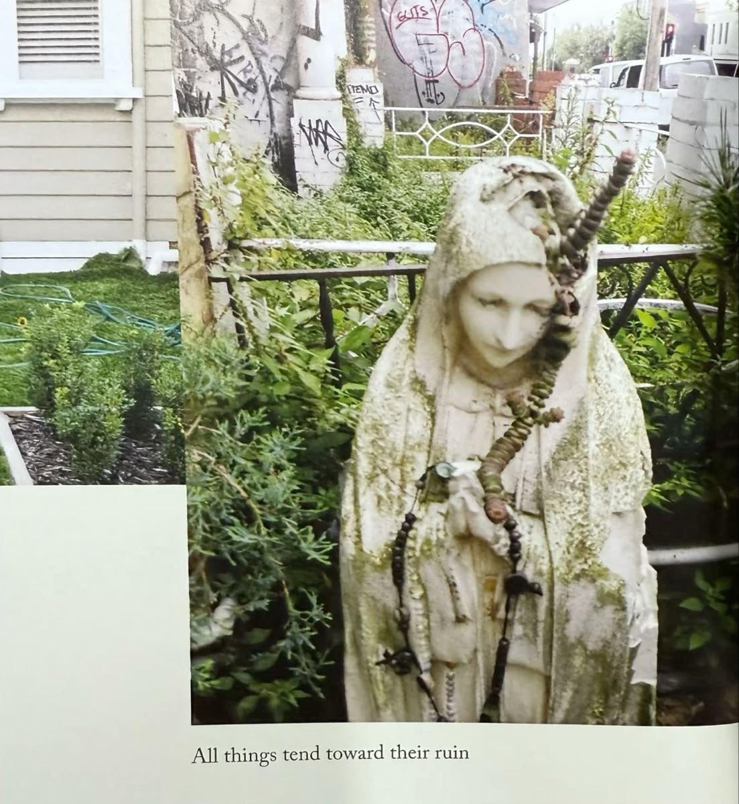

你们毁了一个萌系的女孩
@200x0x1x
想象自己是病榻上垂死的女神，这张小床仿佛已经是漂流在小溪上的棺船，船上摆满寒带的鲜花和果实。持续的高烧、梦呓、断断续续的昏睡。偶尔半睁开的眼睛，蒙着一层白翳。尽管眼睛只能辨认房间里的人影和家具的轮廓，却分明地看到一朵大红莲，那花苞旋转着从房间一角向着床下游移。你们看得见那朵花吗？她向自己宠爱的每一位女儿询问。女人们面面相觑，终于有人掩住面门哭起来。孩子，你为什么要流泪呢？她用野兽一样的爪子，虚弱地摩挲着床前人的脸颊。你为什么要流泪呢？要知道，生命是永恒的一年四季。在数百年前的某天，你们也是这样跪在女神床前，一朵红莲正向着我的床底慢慢爬去。
